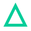
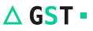
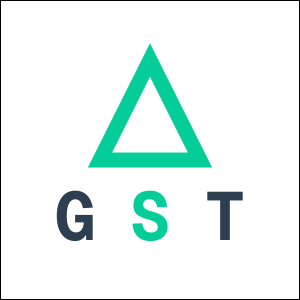
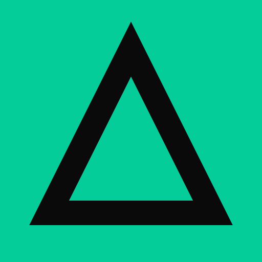
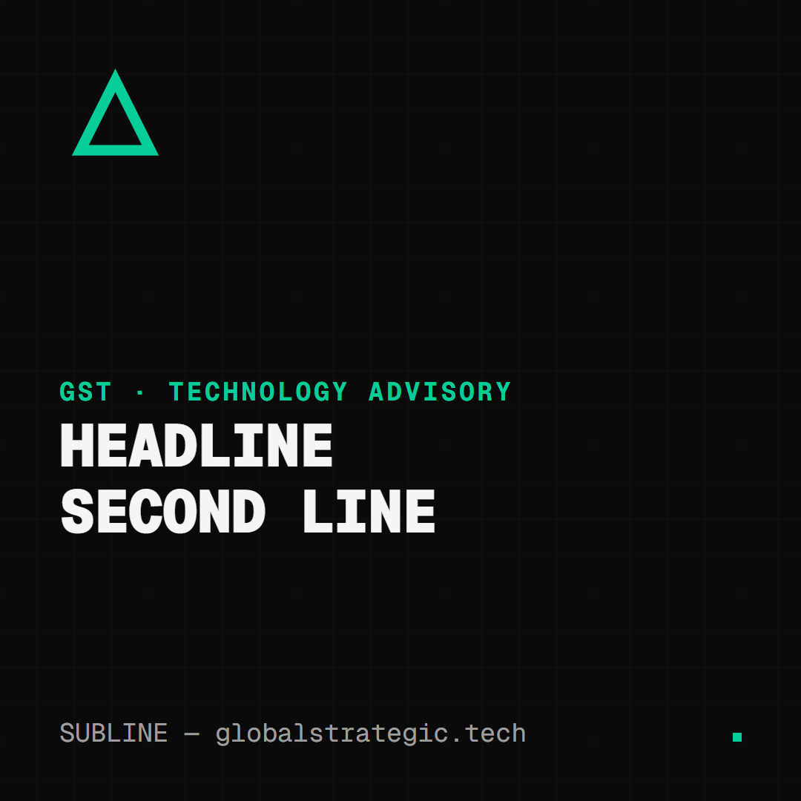
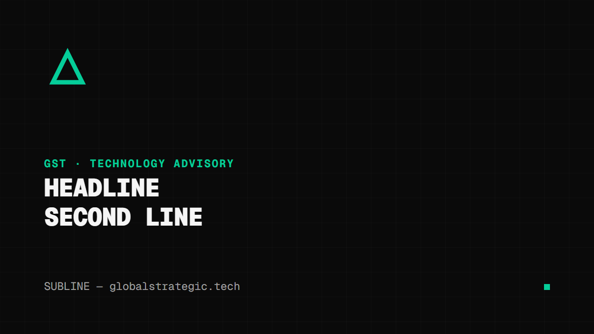
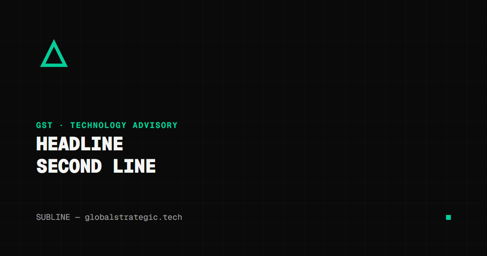
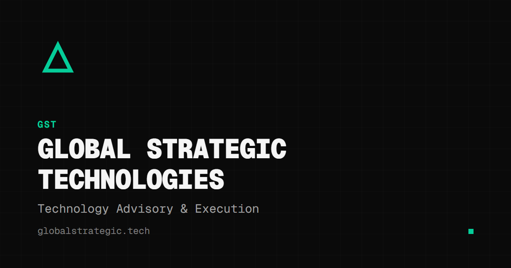
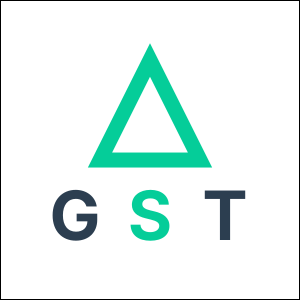
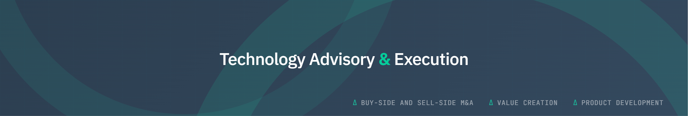

Delta — teal
assets/logo/gst-delta-icon-teal-stroke-thick.svg
Use: the default. Any light or near-black background. Navigation, documents, decks, decoration.
Not on teal or mid-tone/busy backgrounds.

Every file in this repo's assets/, shown on light and dark, with what it is for. Colours, type and UI components are documented on the live site at globalstrategic.tech/brand; the written rules are in guidelines/.
A stroked delta on a 64-unit grid, stroke 6, mitred. Pick the variant by background; never recolour the file. On the web it is inline SVG and inherits currentColor.



The site's header lockup: delta at 1 em, GST in GST Mono 900 with −0.05 em tracking and a teal S, then an 8 px teal square. Minimum height 24 px. Clear space: half the cap height on all sides.
| Part | Spec |
|---|---|
| Delta | 1 em, stroke #05cd99 |
| Gap | 0.125 em (--spacing-xs) |
| GST | GST Mono, 900, uppercase, letter-spacing −0.05 em; S in teal |
| Gap | 0.25 em (--spacing-sm) |
| Dot | 8 × 8 px, #05cd99 (pulses on the web) |
| Ink | #1a1a1a on light · #f5f5f5 on dark |
Source of truth: HeaderLogo.astro in gst-website. Full rules in LOGO_USAGE.md.
Already wired into the website; reuse for any GST-branded web property, dashboard or internal tool so tabs and home-screen icons match.
Editable SVGs with the font embedded: open in any vector editor or a browser, replace the placeholder lines, export at 1×. Dark ground, 50 px design grid, delta top-left, teal dot bottom-right.



The brand-level palette. Domain and tool colours, the six alternative palettes and contrast rules are in BRAND_GUIDELINES.md.
Primary teal#05cd99 · --color-primary
Same in both themes. Brand, links, borders, active states.
Teal dark#04a87a · --color-primary-dark
Hover / pressed.
Amber (light)#cc8800 · --color-secondary
Attention, CTA, warnings.
Amber (dark)#ffaa33 · --color-secondary
Same role, dark theme.
White#ffffff · --bg-light
Off-white#f5f5f5 · --bg-light-alt
Charcoal#141414 · --bg-dark-tertiary
Near black#0a0a0a · --bg-dark
Ink#1a1a1a · text on light
Ink (dark)#f5f5f5 · text on dark
#00D9B5. Assets exported before September 2026 carry it — replace them with the files on this page.| Context | Write | Never |
|---|---|---|
| Marketing copy, titles, meta | GST | Global Strategic Technology · Global Strategic Tech · GS Tech |
| First mention in long-form | Global Strategic Technologies (GST) | GST alone before the full name is established |
| Legal, contracts, invoices | Global Strategic Technologies LLC | GST alone |
| Do | Don't |
|---|---|
| Pick the mark variant for the background | Recolour a file, or put teal on teal / white on white |
| Keep the stroke, mitred joins and proportions | Fill the triangle, round it, rotate, skew, add shadows or gradients |
| Set GST in GST Mono 900 with the teal S and the dot | Retype the wordmark in another face or weight |
| Give the mark clear space of 2× its stroke width | Crowd it with text, rules or other logos |
| Use amber only to signal action or attention | Use amber, or anything but teal/ink/white, for the logo |
{kind=link}
{kind=link}
{kind=link}
{kind=link}
{kind=link}
{kind=link}
{kind=link}
{kind=link}
{kind=link}
{kind=link}
{kind=link}
{kind=link}
{kind=link}
{kind=link}
{kind=link}
{kind=link}
Δ Social & sharing images

Open Graph image
assets/social/og-image-1200x630.{png,svg}· 1200×630Use: default
og:image/ Twitter card for any GST page without its own image; link previews in Slack, LinkedIn, iMessage.
LinkedIn company logo
assets/social/linkedin-company-logo.{svg,png}· squareUse: the LinkedIn Page avatar (upload the PNG). Also the square avatar for any directory, vendor portal or partner listing.

LinkedIn cover
assets/social/linkedin-cover-2256x382.png· 2256×382Use: LinkedIn Page banner. Keep the centre-safe area clear of text when adapting.